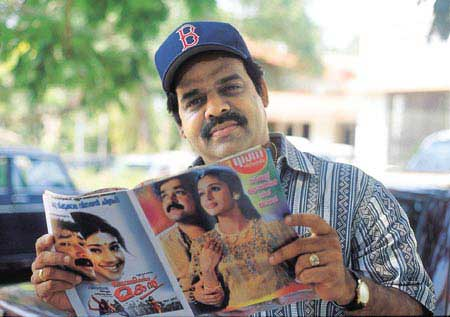

Balachandra
Menon on his first job
Interviewed by Sheila Sivanand.
From
Reader’s Digest (India) June 2001
The Reporter
Ever since I can remember, I’ve wanted to be in the movies. I didn’t miss a single film that came to town and often skipped classes to be at a matinee. In my teens, I wrote a short story in which I was one of the main characters—a scriptwriter and director.
My father, a railway station master, felt it would make more sense for his only son to study medicine or join the IAS. But I was too involved in college dramatics to do very well academically. After my BSc in 1974 I studied journalism and applied for a reporter’s job with Nana, a popular Malayalam film magazine.
“I love film journalism,” I declared to the editor.
“Or you want to marry an actress?” he joked. Anyway, he hired me. I was posted at Chennai. Although my monthly salary was a measly Rs250, I worked hard. Reporting honed my writing skills, and made me curious about people. I struck up conversations with anyone willing to talk—actors, cameramen, labourers. Allowed to move freely about filmsets, I watched everything closely, absorbing the techniques and tricks of the trade.
In my two years at Nana, I earned a reputation for telling it like it is. I refused to flatter or embroider. And if I bruised a few egos along the way, I also earned the film industry’s grudging respect.
Back at my lodgings, I often told friends stories I’d made up, sometimes acting out my characters’ parts. Among my listeners one night was a student at the local film institute. As I finished one of my stories the student said he wanted to make it into a film, and shortly thereafter, to everyone’s surprise, he persuaded his uncle to produce it. And not only did I write the script for Uthrada Rathri (Onam Eve), I acted in it and directed it! Since then, I’ve acted, directed, produced and written scripts for innumerable films. I’m now everything I wanted to be.
But I don’t think I’d have succeeded were it not for the habits I gleaned from journalism—an inveterate curiosity, a sense of wonder, the need to talk to people and to listen carefully. And, yes, the need to dream and to focus all your energies to make that dream come true.
Endnote: Actor, director and scriptwiriter S. Balachandra Menon was a co-winner of the National Best Actor Award in 1997.
Photo caption: Where it All Began – Balachandra Menon reads a copy of Nana.